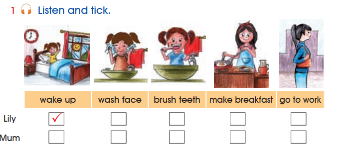
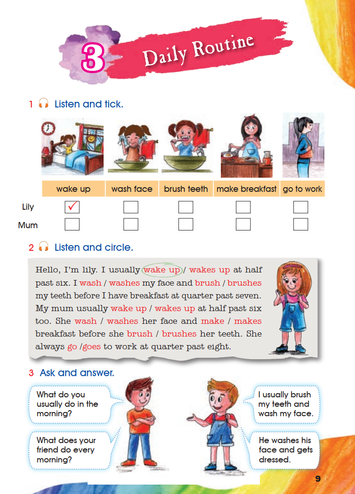
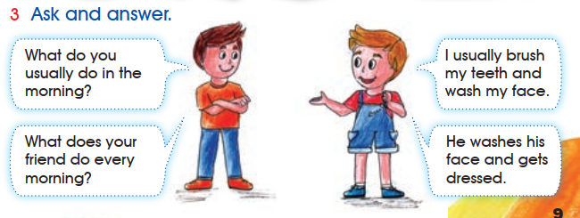
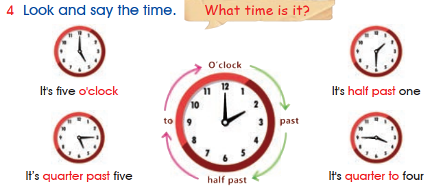
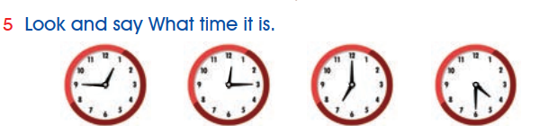
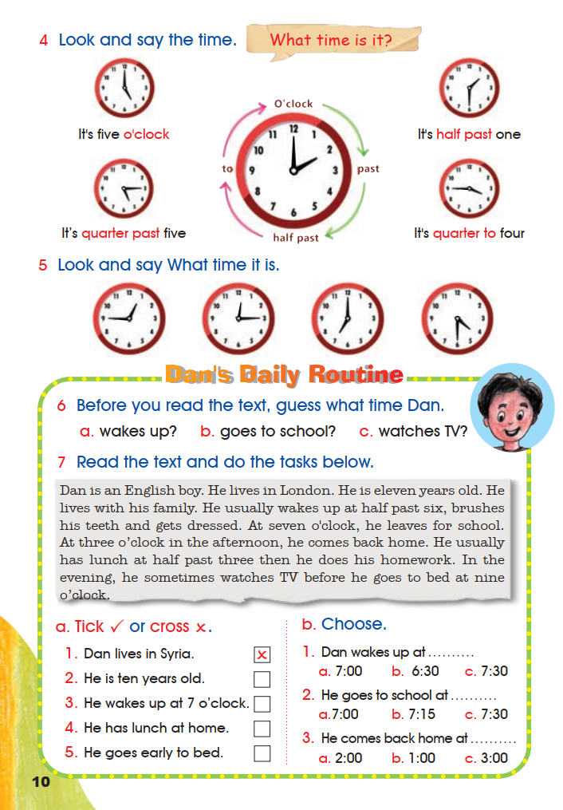
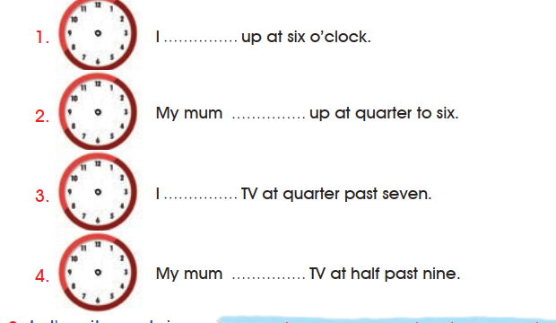
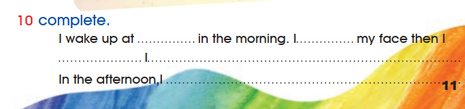
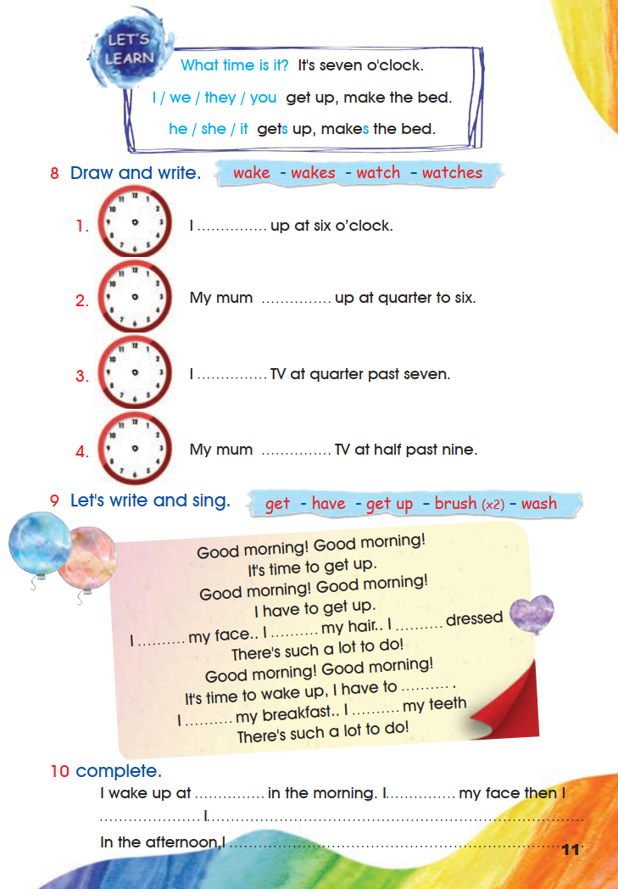

Pupil’s Book
Daily Routine · pages 9–11
Activities 1–10 and the printed “Let’s Learn” box follow the supplied pages. The scans stay unchanged; notes about missing audio and unclear answers are kept separate from the book wording.
1. Listen and tick.

Open the original source · Pupil’s Book · p. 9
Upload 1, preserved unchanged. SHA-256 and source mapping are recorded in the source manifest.

2. Listen and circle.
Hello, I’m Lily. I usually wake up / wakes up at half past six. I wash / washes my face and brush / brushes my teeth before I have breakfast at quarter past seven. My mum usually wake up / wakes up at half past six too. She wash / washes her face and make / makes breakfast before she brush / brushes her teeth. She always go / goes to work at quarter past eight.
3. Ask and answer.

What do you usually do in the morning?
What does your friend do every morning?
I usually brush my teeth and wash my face.
He washes his face and gets dressed.
Speaking practice. The two questions and two example answers are printed in the speech bubbles.
4. Look and say the time.

- It’s five o’clock.
- It’s quarter past five.
- It’s half past one.
- It’s quarter to four.
- It’s seven o’clock. (Let’s Learn example, p. 11)
5. Look and say What time it is.
The capitalisation in the heading is kept as printed. The four clock faces have no printed written answers.

6. Before you read the text, guess what time Dan…
7. Read the text and do the tasks below.
Dan is an English boy. He lives in London. He is eleven years old. He lives with his family. He usually wakes up at half past six, brushes his teeth and gets dressed. At seven o’clock, he leaves for school. At three o’clock in the afternoon, he comes back home. He usually has lunch at half past three then he does his homework. In the evening, he sometimes watches TV before he goes to bed at nine o’clock.
a. Tick ✓ or cross ×.
1. Dan lives in Syria. × printed in the source
2. He is ten years old.
3. He wakes up at 7 o’clock.
4. He has lunch at home.
5. He goes early to bed.
2. × — the text says Dan is eleven years old.
3. × — the text says he wakes up at half past six.
Items 4 and 5 are not keyed: the passage does not say where he eats lunch, and “early” is not defined relative to a stated bedtime.
b. Choose.
1. Dan wakes up at …………
2. He goes to school at …………
3. He comes back home at …………
1. b. 6:30 · 2. a. 7:00 · 3. c. 3:00
Each time is stated in the reading passage. No listening information is involved in this task.
Open the original source · Pupil’s Book · p. 10
Upload 2, preserved unchanged. SHA-256 and source mapping are recorded in the source manifest.

Let’s Learn
What time is it? It’s seven o’clock.
I / we / they / you get up, make the bed.
he / she / it gets up, makes the bed.
The printed subject groups and verb forms are transcribed as shown; the distinction between the two lines is retained without changing the book text.
8. Draw and write.
wake – wakes – watch – watches

9. Let’s write and sing.
get – have – get up – brush (×2) – wash
10. Complete.

This is personal writing. The scan prints an unfinished “In the afternoon, I …” line and does not supply a continuation or a fixed answer.
Open the original source · Pupil’s Book · p. 11
Upload 3, preserved unchanged. SHA-256 and source mapping are recorded in the source manifest.

Practice answers are saved in this browser only.